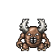
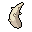
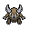

Pokédex / #127

Pinsir #127
Bug
Its two long pincer horns are powerful. Once they grip an enemy, they won't release until the foe is torn.
Generation 1 · Kanto

Stats
| Attack | 125 | |
|---|---|---|
| Defense | 100 | |
| Sp. Atk | 55 | |
| Sp. Def | 70 |
In the wild
| Wild level | 45–55 |
|---|---|
| HP | 65 |
| Experience | 12 |
| Egg groups | Bug |
Evolution
- Does not evolve.
Moves
| Level | Move | Type | Category | Power | Energy | Cooldown | Effect | |
|---|---|---|---|---|---|---|---|---|
| 1 | Tackle | Normal | Physical | 15 | 15 | 1s | Tackle is one of the most common and basic moves a Pokemon learns. It deals damage with no additional effects. | |
| 5 | Headbutt | Normal | Physical | 70 | 70 | 11s | Headbutt deals damage and has a 30% chance of causing the target to flinch. | |
| 10 | Seismic Toss | Fighting | Physical | 80 | 80 | 12s | Seismic Toss deals damage and has no secondary effect. | |
| 15 | Brick Break | Fighting | Physical | 75 | 75 | 12s | Brick Break deals damage, but removes the effects of Reflect before attacking. | |
| 20 | Harden | Normal | Status | – | 70 | 60s | Harden raises the user's Defense by one stage. | |
| 25 | Take Down | Normal | Physical | 90 | 90 | 14s | Take Down deals damage and has no secondary effect. | |
| 30 | Guillotine | Normal | Physical | 110 | 110 | 17s | Guillotine deals damage and has no secondary effect. | |
| 35 | Vital Throw | Fighting | Physical | 70 | 70 | 11s | Vital Throw deals damage and ignores changes to the Accuracy and Evasion stats. | |
| 40 | Thrash | Normal | Physical | 40 | 115 | 12s | The user attacks for 2-3 turns and then becomes confused. | |
| 45 | Focus Energy | Normal | Status | – | 70 | 60s | Increases Critical-Hit ratio by 50%. | |
| 50 | Revenge | Fighting | Physical | 120 | 120 | 18s | Revenge charge during 5 turns and then deals damage. | |
| 55 | Submission | Fighting | Physical | 80 | 80 | 12s | Submission deals damage and has no secondary effect. | |
| 60 | X-Scissor | Bug | Physical | 80 | 90 | 18s | X-Scissor deals damage and has no secondary effect. | |
| 65 | Superpower | Fighting | Physical | 120 | 120 | 20s | Superpower deals damage but lowers the user's Attack and Defense by one stage each after attacking. | |
| 70 | Swords Dance | Normal | Status | – | 100 | 60s | Swords Dance raises the user's Attack by two stages. |
Field abilities
DigRock ClimbStrengthHeadbuttCutRock Smash
Special abilities
Hyper Cutter
Egg moves
Bug BiteClose CombatFeintFaint AttackFlailFury AttackMe FirstQuick AttackSuperpower
Technical machines
BideBody SlamBrick BreakBulk UpDouble EdgeDouble TeamEarthquakeFocus PunchFury CutterHeadbuttHyper BeamMimicRageRain DanceRestRock SlideRock TombSeismic TossSubmissionSubstituteSwords DanceTake DownToxic
Drops
| Item | Amount | Chance | |
|---|---|---|---|
| bunch of wheat | 1–6 | 78.1% | |
| sample of sand wasp honey | 1 | 15.6% | |
| cutting fang | 1 | 12.5% | |
 | pincer horn | 1 | 8.93% |
| Insect Plate | 1 | 0.1% | |
 | pinsir doll | 1 | 0.1% |
| held silver powder | 1 | 0.02% | |
| TM 16 | 1 | 0.01% | |
| TM 49 | 1 | 0.01% | |
| pinsirite | 1 | 0.0004% |